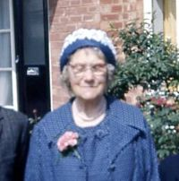
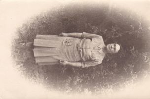
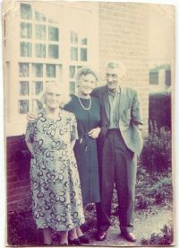

Emily Archer
18 Jan 1890 – 14 Sep 1978
Photo Gallery



Overview
Notes.
Emily was "Married" to Walter Lawrence with whom she had three children, that was until early 1925 when it is believed that Emily found out about Walter's other family in the USA, Emily then pregnant with Leslie, moved to Windsor.
Marriage and Children
Married Arthur John Weeks.
Known child (or Children): Evelyn Lawrence 1919-2023, Margaret Lawrence 1922-2011, Leslie Lawrence-Archer 1925-1986.
Timeline
18 Jan 1890: Birth in 2 Sydney Place, Windsor,
Berkshire, Windsor, Berkshire, England, United Kingdom.
6 Oct 1928: Marriage to Arthur John Weeks in
Windsor, Berkshire, England, United Kingdom (age 38).
14 Sep 1978: Death in Windsor, Berkshire,
England, United Kingdom (age 88).
Historical Context
Notes.